On this day we saw Caesarea Philippi (or Banias) / Banias Falls / Tel Dan / Golan Heights / Ben Tal
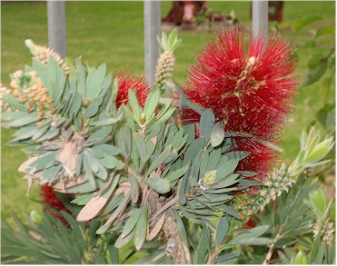
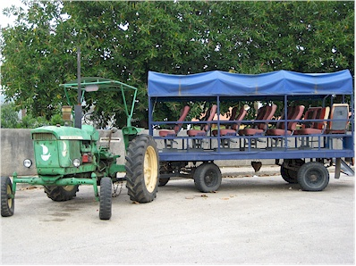
I wandered around taking a few pictures on the Kibbutz that morning, including these two of a strange flower and a John Deere taxi.
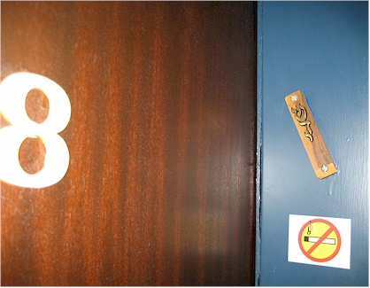
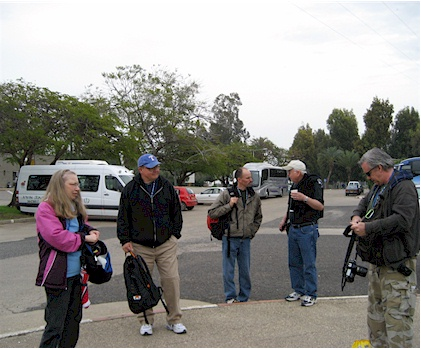
the last one on the bus, trust me - I experienced it!
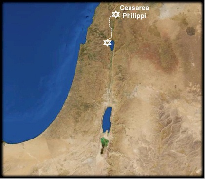
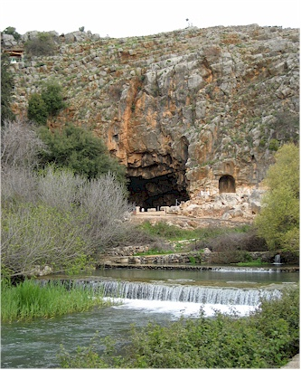
We started our day by visiting Ceasarea Philippi. This is also called Banias, because it was originally a pagan site for worship of Pan. This caused it to be called Paneas by the Phoenicians, but it was mutated over the years into Banias. The Romans (Herod Phillip, son of Herod the Great) renamed it Ceasarea Philippi - the named lots of places Ceasarea as a way of trying to score points with Ceasar.
Water used to flow out of that large cave, sometimes called the Cave of Pan, also was said to be called, "The gates of hell" back in Jesus' time. The pagans used to make sacrifices by throwing a goat into the cave. Different messages were interpreted from whether any blood came out afterward or not.
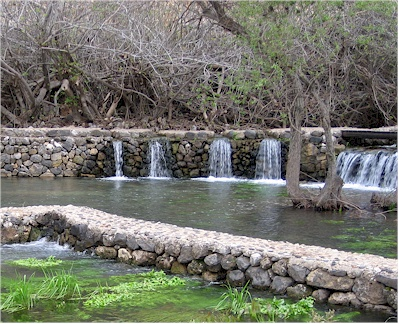
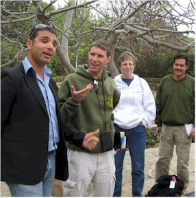
the Jordan (Hasbani, Dan, and Banias.) The Dan river was
named because the Israelite tribe of Dan settled there. The
name Jordan means "descending from Dan."
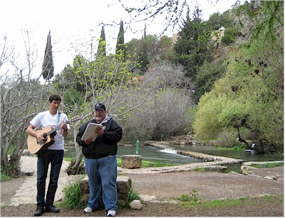
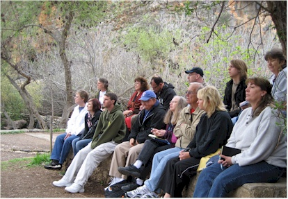
Teaching: Pastor Ken
We learned that it was in this area where Jesus had the
following conversation with his disciples:
When Jesus came into the region of Caesarea Philippi, He asked His disciples,
saying, �Who do men say that I, the Son of Man, am?�
So they said, �Some say John the Baptist, some Elijah, and others Jeremiah
or one of the prophets.�
He said to them, �But who do you say that I am?�
Simon Peter answered and said, �You are the Christ, the Son of the living
God.�
Jesus answered and said to him, �Blessed are you, Simon Bar-Jonah, for flesh
and blood has not revealed this to you, but My Father who is in heaven. And I
also say to you that you are Peter, and on this rock I will build My church,
and the gates of Hades shall not prevail against it. Matthew
16:13-18
NOTE: When Jesus calls Simon, "Simon Bar-Jonah" the Bar means "son of" so he is literally saying, "Simon, son of Jonah." I thought that was interesting.
We discussed some interesting points about this passage - one of which being that the cave behind us was called 'the gates of hell.' Also that Simon's new name Peter (petros in the Greek) means small stone or pebble. We also learned that this is the first usage of the word "church" by Jesus in the Bible. I have learned that the Greek word petros which means small stone is the word used for the name given to Simon, but the word used for rock in "upon this rock I will build my church" is the word petra - which means a solid, immovable rock.
We talked also about the fact that Jesus was talking with the disciples
about who the people thought he was. He may have been leading them to the
realization that C.S. Lewis worded so well in his famous (and wonderful) book,
"Mere Christianity." In this book Lewis makes this statement which
is now referred to as the 'Lord/Liar/Lunatic' trilemma: "A man who was
merely a man and said the sort of things Jesus said would not be a great moral
teacher. He would either be a lunatic - on the level with a man who says he is
a poached egg - or he would be the devil of hell. You must take your choice.
Either this was, and is, the Son of God, or else a madman or something worse.
You can shut Him up for a fool or you can fall at His feet and call Him Lord
and God. But let us not come with any patronizing nonsense about His being a
great human teacher. He has not left that open to us."
The transfiguration also occurred somewhere in this area. It is covered in Matthew Chapter 17.
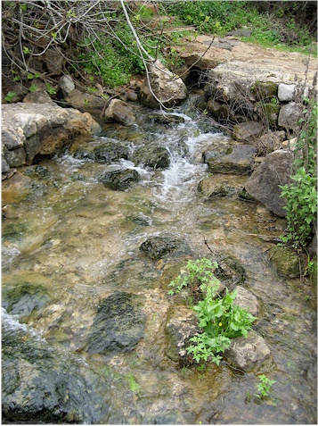
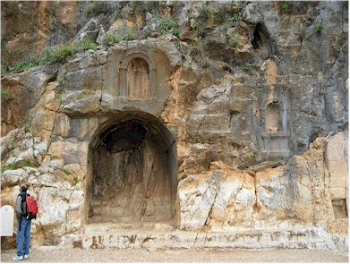
the niches mention those who gave large donations.
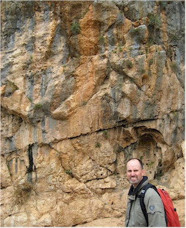
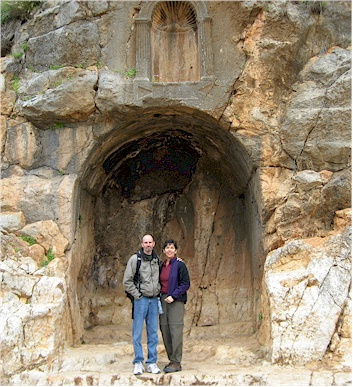
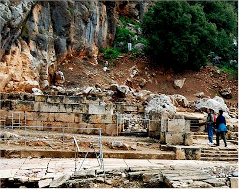
as we checked out the ruins.
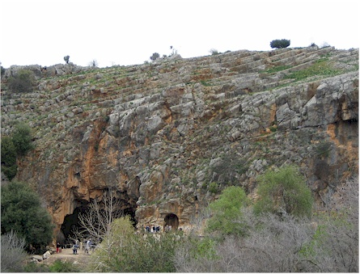
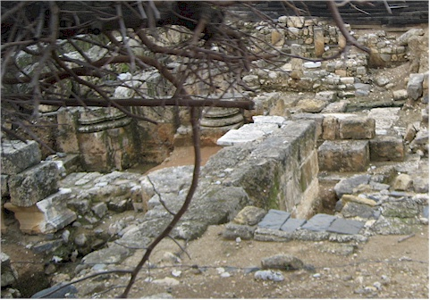
These were some ruins in the area that we didn't go through. (But I'm OK with that!)
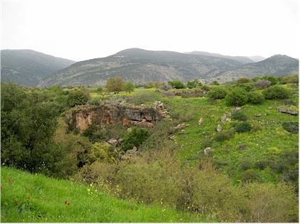
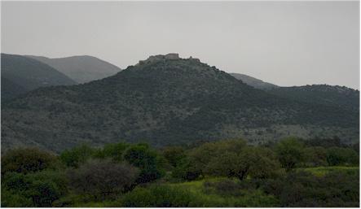
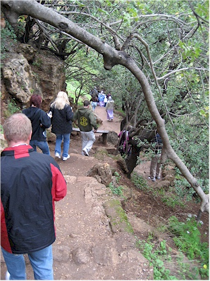
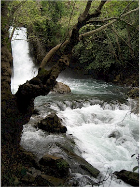
Waterfalls cannot be captured by still pictures.
I took 3 waterfall videos which I combined into one movie
which I hope will do a slightly better job.
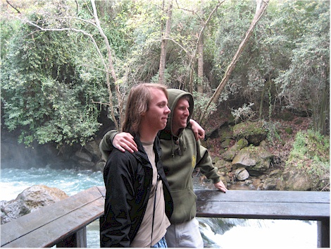
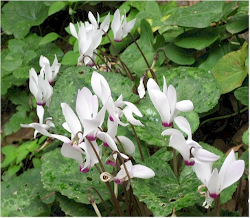
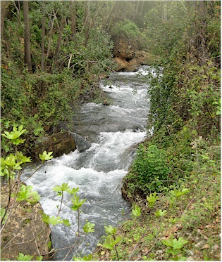
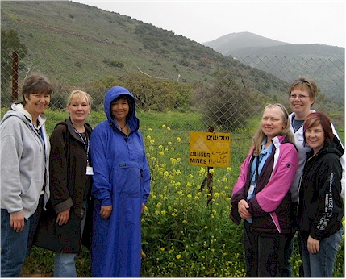
cleared of mines. Here all the mother-in-laws on the trip pose by a sign
warning, "Danger Mines!" Amir though it was very funny.
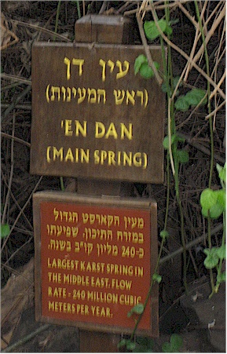
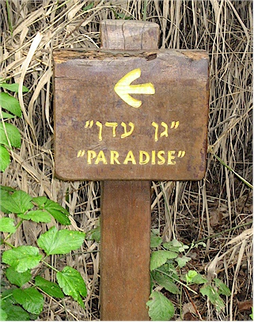
It is the largest spring in the Middle East.
It's "thatta way."
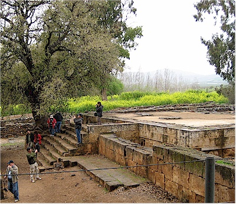
The city of Dan was only named so when the Israelite tribe of Dan conquered it: �they called the name of the city Dan after the name of Dan their father.� Judges 18:29
The city had until then been called Leshem or Laish, and under this name it is also mentioned in ancient Egyptian texts already from the 19th century B.C. onwards and also in Mesopotamian texts. In ancient times, Laish was already a mighty city with bulwarks. It was during this time that the patriarch Abraham and his men pursued the northern kings who had captured his nephew Lot as far as Dan according to Genesis 14:14.
The city became prominent only after the death of King Solomon in 928 B.C. when Israel was divided into two kingdoms. The king of northern Israel, Jeroboam, who wanted to avoid his citizens� pilgrimage to the Temple in Jerusalem, erected two golden calves for his people to worship. He said that these were their new gods, and put one statue in Beit-El, the other one in Dan according to I Kings 12:28-9. These two cities marked the northern and southern borders of his kingdom.
We learned about the history described above, especially about the building of the other temples mentioned in the last paragraph. God did not instruct Jeroboam to build those temples; he did that out of his own desire to keep his people from going to Jerusalem for selfish reasons. "If these people go up to offer sacrifices in the house of the LORD at Jerusalem, then the heart of this people will turn back to their lord, Rehoboam king of Judah, and they will kill me and go back to Rehoboam king of Judah.� 1 Kings 12:27
We learned how pragmatism can lead to compromise. A Christian leading a compromised life is not a good witness to others so we need to be on our guard against this in our daily lives.
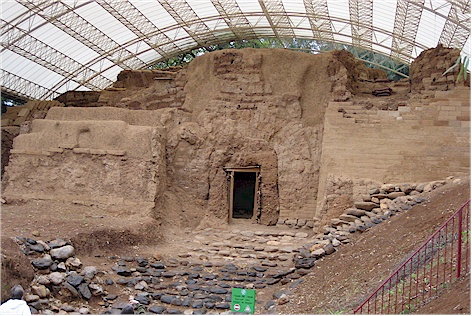
More from JewishMag.com: This gate is the only Bronze Age arched gate that survived complete in the entire Middle East. It is dated to the 18th century B.C., and when it was dug out it reached almost to its original height of 7 meters. It was built of sun-dried mud bricks that used to be covered with white plaster. There are three arches. Stone steps lead to the first gate.
The middle gate is covered by a square building. The third gate leads out to a flight of steps down into a street. The gatehouse as a whole was part of a huge earthen rampart with a stone base that enclosed the city; later it was covered with earth, whereby it was preserved. Estimators think it cost 1000 laborers three years to shovel earth on the 1.7-kilometer rampart.
Abraham would have likely gone through this gate when he came through Laish.
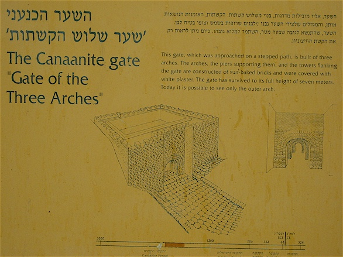
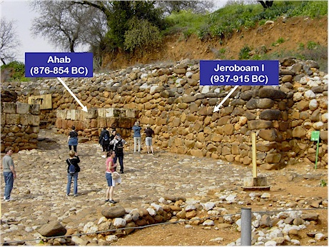
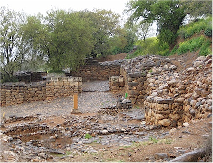
The above shows the second gatehouse, which dates to the Israelite period (9th-8th century B.C.) and was built by king Ahab. The behind-lying building was multi-gated, with seven towers and many different rooms.
During Israelite times the gatehouse was the center of life. 2 Samuel 19:9 speaks of the gate as a place where the king sat: �Then the king arose, and sat in the gate and they told all the people, saying behold, the king doth sit in the gate. And all the people came before the king.�
In the northwest of the courtyard archeologists found a platform; maybe this was used to put a throne. At its corners were beautifully carved stone bases in the shape of petals that supported the pillars of a canopy; the style of these bases comes from Syrian examples. Amir told us they used to have wooden columns placed in the stone bases but a Calvary Chapel pastor leaned on them and knocked them down. Oops!
Also the city elders held sway in the gatehouse, according to several Bible passages (Genesis 23:17-19, Deuteronomy 20:19, Ruth 4:1-2). They probably sat on the stone bench next to the throne platform, with their backs resting against the wall.
The elders listened to pleas that were brought to their attention (Amos 5:15, Zachary 8:16). In this pre-email era the gate was also the place to indulge in gossip (Psalms 69:13) and news about the world outside.
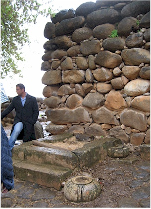
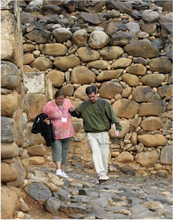
on, and because it was misting that morning. Here Kendall is
being a gentleman and helping ladies down the slippery walk.
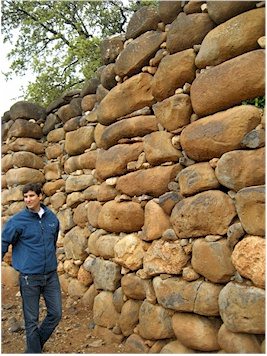
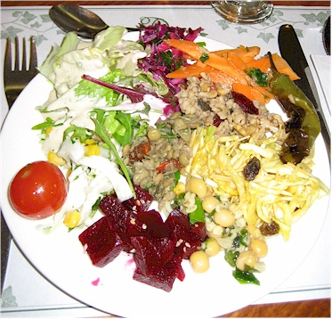
Rigert is a big guy so you can see the rocks are very large.
an amazing spread, just for us. It was really wonderful food.
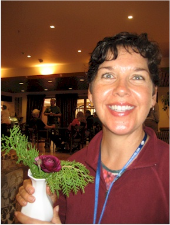
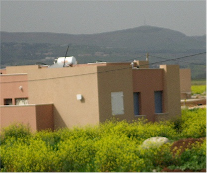
The white window is a set of steel shutters on this home's shelter.
From JewishVirtualLibrary.org: The Mt Bental overlook is beautiful and provides stunning views of Mt Hermon and the Golan. Located in the Golan Heights, Mt Bental is 1,170 meters above sea level. In a region where much is inaccessible to tourists due to restrictions on non-military traffic and poor roads, Mt Bental offers a rare and rewarding sight. The overlook is managed by Kibbutz Merom Golan, the first Kibbutz established in this region after the 1967 war. From the overlook one can see Mt Hermon (3,000 meters above sea level), several Druze villages as well as a network of old bunkers and trenches. Just to the east of Mt Bental is Syria, with Damascus lying just 60km away.
In the Yom Kippur War of 1973, Mt Bental was the site of one of the largest tank battles in history. Mt Bental is a key strategic point for Israel due to its advantageous observation point. Israel knew it count not risk losing this mountain, nor any of the Golan Heights . The Syrians attacked the Golan with 1,500 tanks and 1,000 artillery pieces. Israel countered with only 160 tanks and 60 artillery pieces. The long stretch of valley in between Mt Bental and Mt Hermon became known as the Valley of Tears. The 100 Israeli tanks were reduced to seven under extreme enemy fire. However, the Israelis managed to take down 600 Syrian tanks in the process. The Syrians eventually retreated, but not without inflicting heavy casualties on Israel.
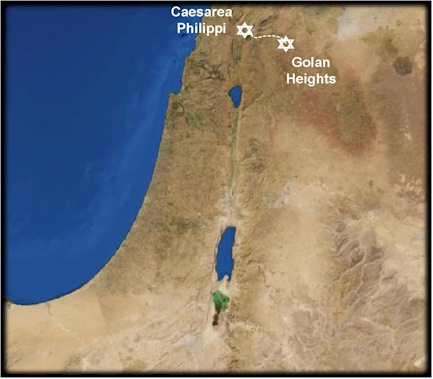
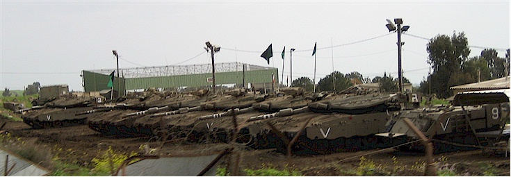
Here are some Israeli tanks we saw on the drive there.
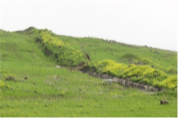
dug all around the area to act as an obstacle to
tank traffic.
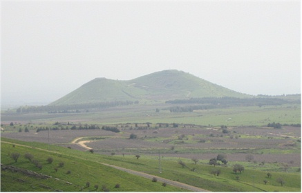
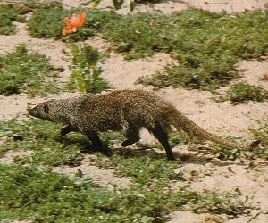
get a picture but I found this one on the internet. Cool!
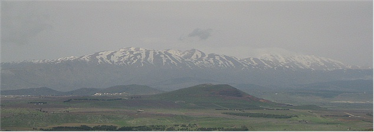
Here's a nice view of Mt. Hermon
It is at the far north part of Israel and measure 9,230 feet
at its highest point.
The highest point inside Isarel's borders is Mizpe Shelagim, or "snow
observatory" at 7,295 feet.
In the Bible it is known as Ba'al Hermon, Sirion, and Sion.
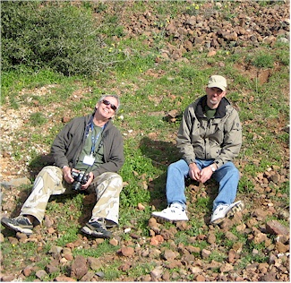
Pastor Ken & Eric taking a rest during our history lesson.
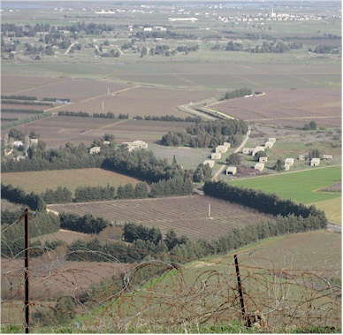
Israelis to maintain control over this area. Our tour guide told us that
when Mt Betal was under Syrian control, the people would have to go
into their bomb shelters several times every day. He said, "Generations
of kids grew up in bomb shelters. It was a hassle." How's that for an understatement?!!!
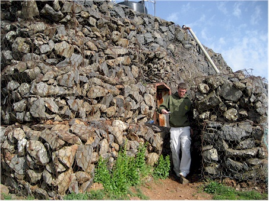
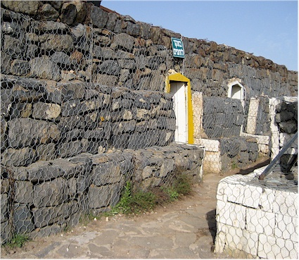
underground but is also built up above ground. It includes waist-deep trenches and shooting turrets. I think this bunker was Syrian but I didn't catch that part for sure.
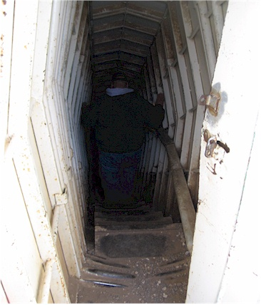
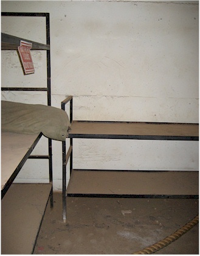
I should have put on my sunglasses
instead of squinting like this. It's a
good smirk of Eric's though.
More places for shooting guns.
They made art out of old Syrian tanks and Chris happily poses with it.
This shows the border between Israel & Syria as seen from the bunker.
wonderful desserts, but Piper made eating dessert into an art form.
Scenes from another Farkle night in the lobby - we had a big crowd on this night.
Check out my strong start - 6 farkles in a row.
Also notice Barry's strong finish - he scored 3,150 points in one turn!
His last roll is pictured next to the scorecard.